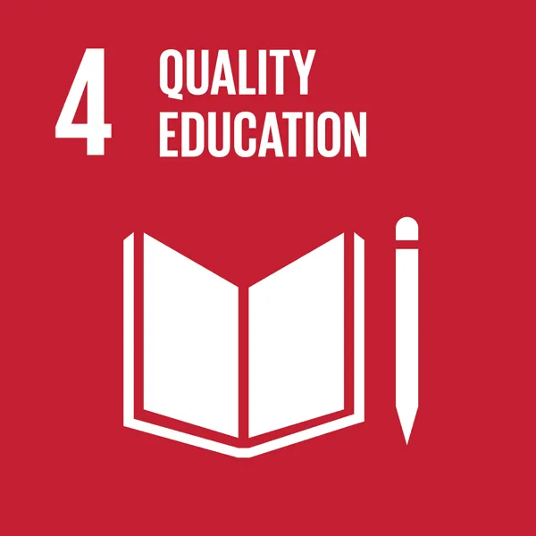
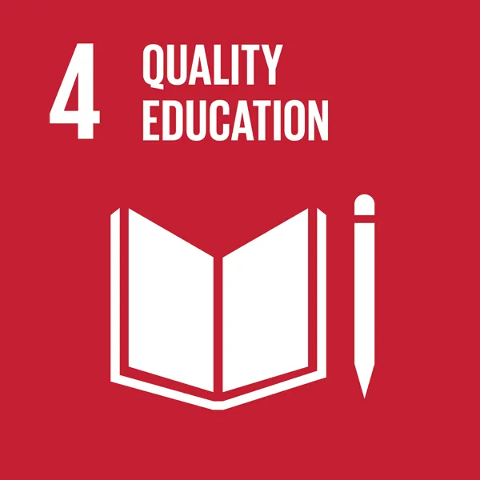

While substantial progress has been made in increasing access to clean drinking water and sanitation, billions of people—mostly in rural areas—still lack these basic services. Worldwide, one in three people do not have access to safe drinking water, two out of five people do not have a basic hand-washing facility with soap and water, and more than 673 million people still practice open defecation.
The COVID-19 pandemic has demonstrated the critical importance of sanitation, hygiene and adequate access to clean water for preventing and containing diseases. Hand hygiene saves lives. According to the World Health Organization, handwashing is one of the most effective actions you can take to reduce the spread of pathogens and prevent infections, including the COVID-19 virus. Yet billions of people still lack safe water sanitation, and funding is inadequate.
TARGETS
6.1 By 2030, achieve universal and equitable access to safe and affordable drinking water for all
6.2 By 2030, achieve access to adequate and equitable sanitation and hygiene for all and end open defecation, paying special attention to the needs of women and girls and those in vulnerable situations
6.3 By 2030, improve water quality by reducing pollution, eliminating dumping and minimizing release of hazardous chemicals and materials, halving the proportion of untreated wastewater and substantially increasing recycling and safe reuse globally
6.4 By 2030, substantially increase water-use efficiency across all sectors and ensure sustainable withdrawals and supply of freshwater to address water scarcity and substantially reduce the number of people suffering from water scarcity
6.5 By 2030, implement integrated water resources management at all levels, including through transboundary cooperation as appropriate
6.6 By 2020, protect and restore water-related ecosystems, including mountains, forests, wetlands, rivers, aquifers and lakes
6.A By 2030, expand international cooperation and capacity-building support to developing countries in water- and sanitation-related activities and programmes, including water harvesting, desalination, water efficiency, wastewater treatment, recycling and reuse technologies
6.B Support and strengthen the participation of local communities in improving water and sanitation management
Click the respective images to know more about the SDG's:


 
